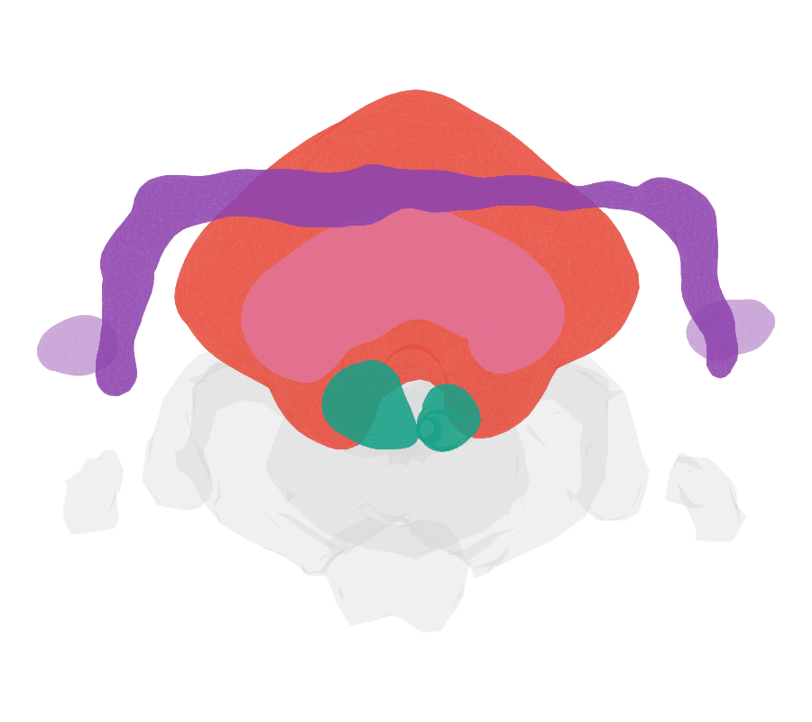

deformetricar is an R client for the Deformetrica shape-registration toolkit (>= 4.3). It lets you fit diffeomorphisms between 3D shapes — point clouds, neuron backbones and surface meshes — and apply them (geodesic shooting) to arbitrary objects, with sensible defaults for registering fly connectome neurons. It also reads and writes VTK object formats.
Deformetrica 4 replaced the old ShootAndFlow3 C++ binaries with a single deformetrica CLI (estimate / compute); deformetricar wraps that modern interface.


Left: the whole Aedes aegypti brain surface warped onto the Drosophila JRC2018F template. Right: just the central complex — the mosquito’s CBU/CBL onto the fly’s fan-shaped and ellipsoid bodies. Both are produced end-to-end by the mosquito-to-fly vignette.
Installation
# install.packages("remotes")
remotes::install_github("natverse/deformetricar")Installing Deformetrica
deformetricar shells out to the Deformetrica (>= 4.3) command-line tool, so you need that available once. The smooth path is to let the package set it up in a managed Python environment (uses reticulate + conda):
# one-time; pulls torch/vtk into a dedicated "deformetrica" conda env
deformetricar::install_deformetrica()After that find_deformetrica() resolves the executable automatically. It searches, in order: options(deformetricar.exe=), the PATH, the managed environment above, then ~/.conda/envs/deformetrica/. If you already have Deformetrica elsewhere, just point at it with options(deformetricar.exe = "/path/to/deformetrica").
Apple Silicon (arm64 macOS): Deformetrica 4.3 pins
torch==1.6, which has no native arm64 wheels.install_deformetrica()handles this automatically — on an M-series Mac it builds anosx-64conda env (Python 3.8) that runs under Rosetta and pulls the x86-64 wheels (verified end-to-end here). You just need Rosetta (softwareupdate --install-rosetta) and a conda binary. Linux and Intel macOS install natively. See?install_deformetrica.
Quick start
library(deformetricar)
# Fit a diffeomorphism between two corresponding point sets ...
fit <- deformetrica_register(source, target, kernel_width = 20)
# ... then apply it to any object (returns the same class you pass in)
warped <- deformetrica_shoot(new_points, fit$control_points, fit$momenta,
kernel_width = fit$kernel_width)
# Register a whole SET of matched objects at once (e.g. cognate neuron tracts)
fit <- deformetrica_register_multi(sources, targets, kernel_width = 20,
landmarks = list(source = lm_s, target = lm_t))Tuning the registration
A Deformetrica fit is governed by a few parameters. Work in µm-scale coordinates (∼O(1–100)); a fit in nm can silently collapse to an identity warp. The most useful knobs, from most to least impactful:
| Parameter | Scope | Default | What it does | Smaller → | Larger → |
|---|---|---|---|---|---|
kernel_width |
global | you set | Spatial stiffness of the diffeomorphism, and the control-point count (CPs seeded on a grid spaced by kernel_width, so count ≈ (extent/kernel_width)³). |
More local + more control points: small structures deform independently, but elongated ones can tear, and a value small relative to the object extent spawns thousands of CPs → over-parameterised → can collapse to an identity warp. | More global/stiff, fewer control points: big structures move coherently, small peripheral ones get dragged by their neighbours. (Try target-diagonal ÷ 11–15; size to the extent, not the gap.) |
data_sigma (noise-std) |
per object | 0.5 | Attachment weight — how hard each object is pulled onto its target. | Stronger pull (a well-matched object drives the fit). | Weaker (e.g. an outer hull as a loose global guide). |
object_kernel_width |
per object | = kernel_width
|
Scale at which each object’s surface/curve mismatch is measured (Current/Varifold). | Finer, more local matching — snaps fine detail. But below the target mesh’s resolution it degrades. | Coarser matching, robust to noisy meshes. |
attachment_type |
per object | Landmark/Current | How mismatch is scored: Landmark (ordered point-to-point L2), Current / Varifold (unordered surfaces/curves; Varifold ignores orientation). |
— | — |
timepoints |
global | 10 | Geodesic integration steps (flow smoothness/accuracy, and GIF frames). | Coarser, faster. | Smoother, slower. |
max_iterations |
global | 150 | Optimiser iterations. | May under-converge. | Better fit, slower. |
landmarks / landmark_sigma
|
shared | — | An optional shared point cloud that anchors the whole fit globally. | Stronger anchor. | Looser. |
Rules of thumb: give strong homologous objects a small data_sigma and a hull a larger one; if a small structure lags, reduce kernel_width (global) before cranking its weight; keep object_kernel_width ≥ the target mesh’s face spacing. Because data_sigma and object_kernel_width are per object, you can tune specific pairings (e.g. the central-complex objects) independently of the rest.
Decouple the two kernels — they do different jobs. kernel_width sets how smooth/stiff the deformation is; object_kernel_width sets the scale at which mismatch is felt. Keeping them equal (the default) is convenient but often wrong. object_kernel_width has a working window and getting outside it silently yields zero momenta (an identity warp):
-
Too small → a source object and its target don’t overlap, so Current/Varifold have no gradient and that object isn’t warped. It must be large enough to bridge the residual gap left by your affine pre-alignment (e.g. if the affine leaves cognate arbors ~40 µm apart,
object_kernel_widthwell below that will not move them). - Too large → many densely co-located objects blur into a single current field that already overlaps its target, so the gradient again collapses to ~zero. This bites hardest with lots of overlapping neurons in one small region (e.g. central-complex arbors): a value that works for a handful of sparse objects can produce an identity warp for dozens of packed ones.
So set kernel_width for the deformation smoothness you want, and set object_kernel_width separately to roughly the post-affine gap between cognate objects — no larger. If a fit returns an identity warp, this decoupling (or a tighter affine pre-alignment) is the first thing to check. When many arbors are packed into one region and no single object_kernel_width both overlaps and avoids blurring, fit each cognate pair independently and compose the results (e.g. into one thin-plate-spline) rather than forcing one over-constrained multi-object diffeomorphism.
Many overlapping objects: per-pair warps → a composite spline
A single multi-object diffeomorphism is the right tool when the matched objects are sparse. When many cognate objects are packed into one small region (e.g. dozens of central-complex arbors), no single object_kernel_width can both bridge each pair’s gap and avoid blurring the neighbours into one already-overlapping current field — the fit collapses to a zero-gradient identity warp (above). The escape hatch, as a first-class alternative:
-
Fit each cognate pair its own, less-constrained warp (
deformetrica_register()per pair), with a kernel sized to that pair alone — roughlyunion(source, target)extent ÷ 4 — and a tight attachment (noise_std/data_sigma≈ 0.05). - Push each source through its own fit to get its warped endpoint.
-
Stitch all the start→end correspondences into one global field — a thin-plate spline (
nat::tpsreg()) over the pooled point cloud. The result is one applyable transform that captured each pair locally, without any single fit having to resolve the whole packed region.
Hull-anchor regulariser. A composite spline built from cable alone extrapolates wildly away from the neurons (sprawling soma tracts fly off). Anchor it: subsample the target neuropil hull, map those points back through the inverse affine to get their source-space partners, and add them as fixed correspondences. The spline then equals the affine away from the neurons instead of extrapolating.
Mesh caveat. Apply a pooled/composite spline to skeletons, not surface meshes — where the field extrapolates beyond the cognate cable it tears or explodes the mesh. Each pair’s own diffeomorphic fit stays smooth, so morph meshes with the per-pair fit, not the composite spline.
Tuning by coordinate descent
Tune one knob at a time, scoring each candidate by a shape metric — symmetric, normalised NBLAST (orientation-aware, density-robust) and/or mean nearest-neighbour distance (µm) between each warped source and its target. A workable loop:
- Sweep the skeleton (Varifold) knobs with meshes off first — Current attachment on meshes is ~3–5× slower, so don’t pay for it while tuning cable.
- Then sweep the mesh knobs.
- Bake each 1-D winner greedily before sweeping the next knob — but keep the fixed operating point in sync with the shipped params, or every sweep is conditioned on stale neighbours.
Params vs. data. If a subregion refuses to move across a whole object_kernel_width / data_sigma sweep (identical NN distance throughout), it has no local correspondence there — add a landmark or cognate pair, don’t keep tuning kernels. Conversely, a landmarks= anchor the affine already satisfies contributes no gradient and can zero the whole warp; anchor only points that still need to move. (An all-zero-momenta identity fit is flagged on the returned registration as $identity = TRUE, with a warning.)
Pairing and scoring gotchas
-
Auto-pairing cognates: optimal 1:1 assignment (e.g.
clue::solve_LSAP, maximising total NBLAST within a group) beats greedy per-source best-match. Look-alike types make many sources collide on one target, so a strict de-dup afterwards throws away ~half the pairs; the optimal assignment keepsmin(n_source, n_target)at the best total score. -
Scoring pooled (many-to-many) warps: do not score by name-intersecting the source and target neuronlists — different datasets carry different ids, so
intersect()is empty and the score silently returnsNaN. Pool the point clouds (or rename both to a shared key) before measuring.
Objects of very different size in one fit
object_kernel_width and data_sigma are independent knobs and should be set independently: the kernel is the scale at which a mismatch is felt, the sigma is the strength of the pull. This matters most when one object is much larger than the others — a whole-brain envelope fitted alongside individual neuropils, say.
Tuning sigma alone leaves only two bad states. Make the large object’s sigma tight and it dominates the shared deformation, dragging the small objects off their targets (the joint fit can end up worse than the affine initialisation). Loosen it enough to stop interfering and it stops moving.
Instead give the large object a large object_kernel_width and a tight data_sigma. It then pulls strongly, but only at a coarse scale, and is structurally unable to compete for the fine detail the smaller objects should own. In one real case a brain envelope at object_kernel_width 150 with data_sigma 0.1 — against 40 / 0.1 for the neuropils — improved the envelope by 31% while the neuropils simultaneously reached their best alignment.
A useful diagnostic: if a large guide object either bullies its neighbours or refuses to move, reach for its kernel before its sigma.
Articles
- Warping a mosquito brain onto the fly — register the Aedes aegypti brain onto Drosophila JRC2018F, driven by cross-identified neuropils matched left-to-left and right-to-right, with a nat.ggplot GIF.
- A FAFB left-right brain registration — register the FAFB brain surface to its mirror image.
- Symmetrising the L1 larval CNS + finding cognates — build a left-right symmetrising warp from L1 larval VFB CATMAID neurons and find cognate pairs.
- Warping maleCNS DA1 PNs onto the BANC — bridge the DA1 projection neurons from the maleCNS connectome into BANC space, then fit a per-side diffeomorphism (with an ordered soma correspondence) to warp them onto their BANC counterparts.
Citation
citation("deformetricar") cites the package, the natverse (Bates et al. 2020, eLife), and the Deformetrica software (Bône et al. 2018; Durrleman et al. 2014). Please cite all three when you use deformetricar.
Acknowledgements
Deformetrica is developed by the Aramis Lab at the Paris Brain Institute (ICM). deformetricar merely wraps it. The Aedes aegypti brain atlas used in the mosquito-to-fly example is from Meg Younger’s lab (Mosquito Brain Browser). Part of the natverse.